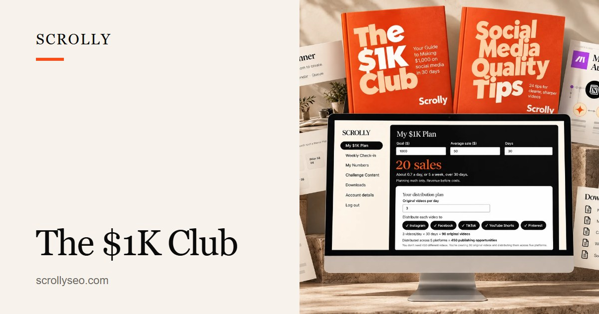
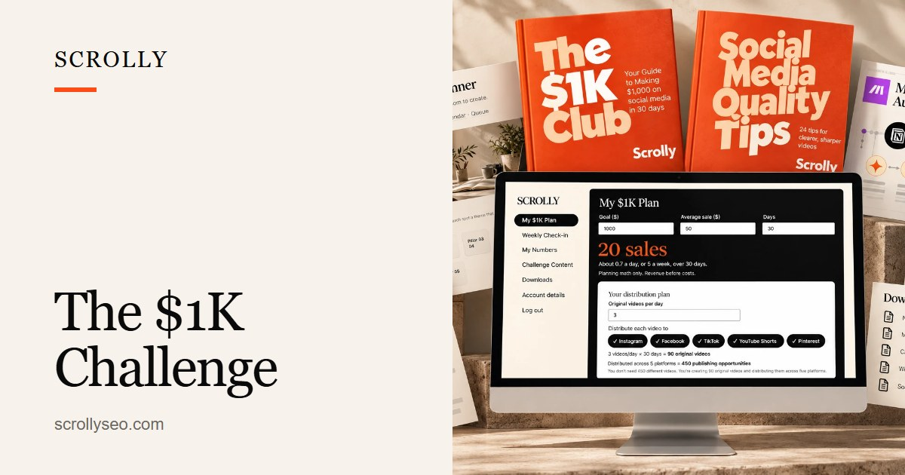
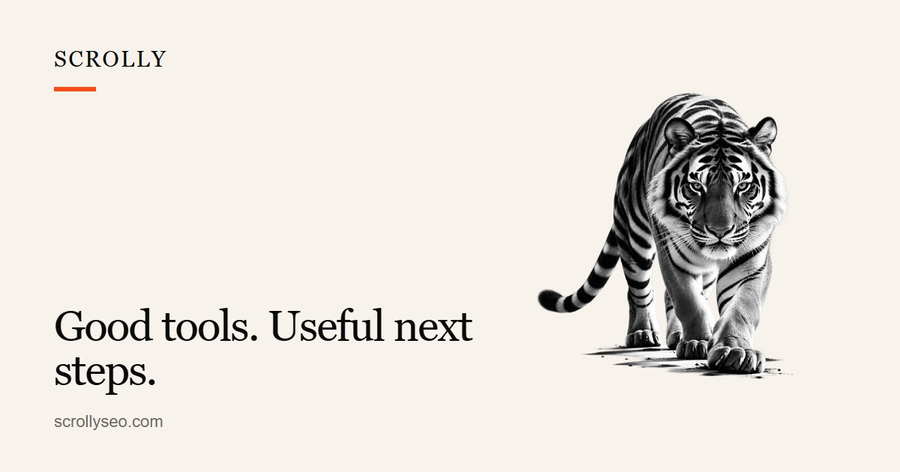
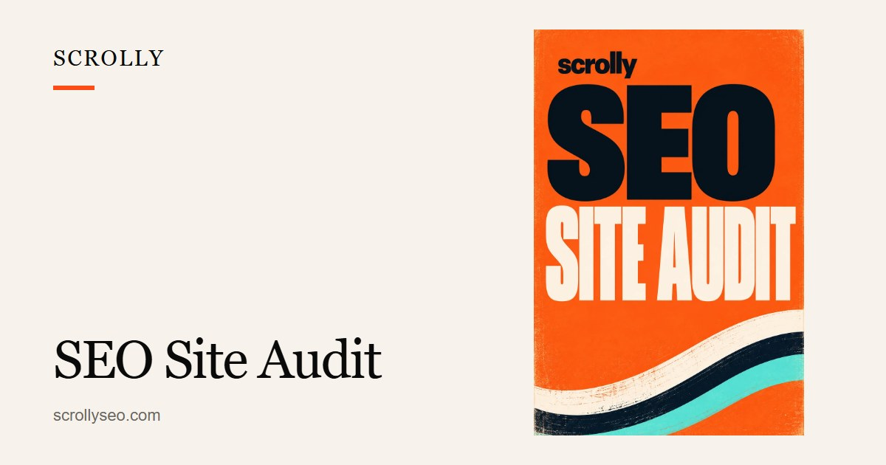
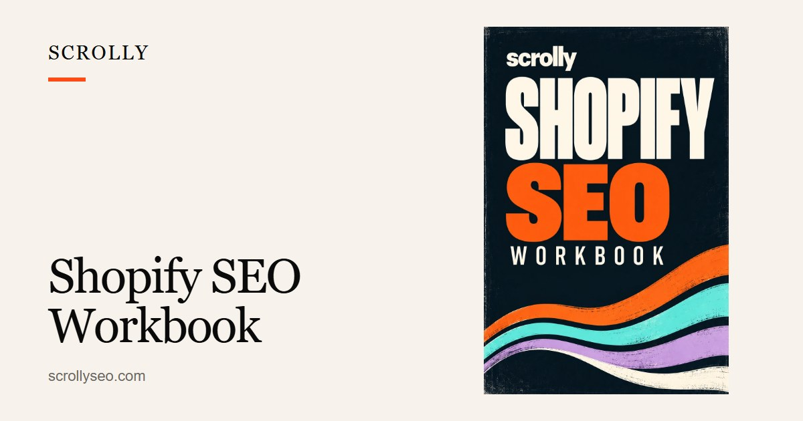
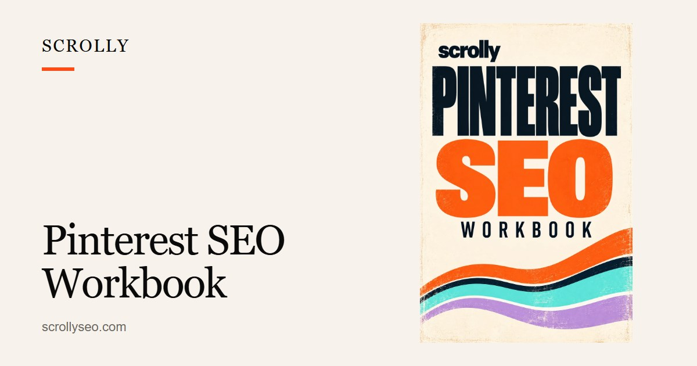
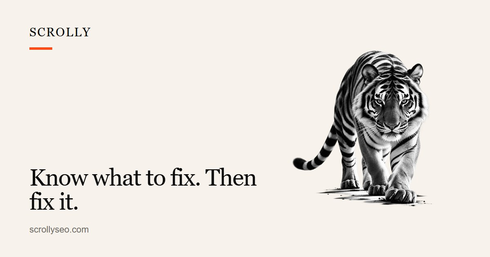

default (every other page)Build an audience that buysScrolly helps small businesses and creators find more customers without depending on paid ads.
page 161Build an audience that buysFind your path to more customers without depending on paid ads. Clubs, Challenges, free calculators and practical guides.

page 291The $1K ClubA complete toolkit to plan, create and go after your first $1,000 with organic content.

page 303The $1K Challenge30 consecutive days to go after your first $1,000 with organic content. Reach your verified goal and earn the Club T-shirt.
page 1132Free business calculatorsWork out what it takes to reach your income goal. Turn a revenue goal into sales, website visitors and views.
page 1151Income Goal CalculatorSet your income goal and offer price. See how many sales, website visitors and views it takes to get there.
page 1152Price to Customers CalculatorCompare three price points side by side. See how many customers each one needs to reach your goal.
page 1153Sales Goal CalculatorBreak a monthly revenue target into the sales you need each month, week and day.
page 1154Traffic to Sales CalculatorTurn your website traffic and conversion rate into estimated sales and revenue.
page 1155Conversion Rate CalculatorFind out what share of your website visitors actually buy.
page 1156Content Output CalculatorSee how a small daily content habit adds up when you share each piece on more than one platform.
page 1157Profit CalculatorWork out your gross profit, net profit and profit margin from revenue and costs.
page 1158Break-Even CalculatorFind out how many sales it takes for a course, tool or ad budget to pay for itself.
page 1159Average Order Value CalculatorSee how much the average customer spends per order, and what a small increase is worth.

page 312Good tools. Useful next steps.Practical workbooks to help you research, plan and improve how customers discover your business.
page 313For the builders. For the doers.Scrolly tees, printed to order. Free shipping in the US.
page 316Be easier to discoverA site audit, implementation help and practical platform workbooks for when SEO is your next step.

page 16SEO Site AuditA prioritized expert audit of your website, competitors, technical performance, content and search opportunities.

page 50Shopify SEO WorkbookA guided, 29-section workbook: build a keyword universe, a site architecture, optimized pages and a 90-day plan for your store.

page 71Pinterest SEO WorkbookFind what your customers search for, turn it into boards and Pins, and leave with a 90-day Pinterest plan.

page 263Know what to fix. Then fix it.Scrolly Implementation is in development: turning approved SEO recommendations into real website changes. Join the early-access list.